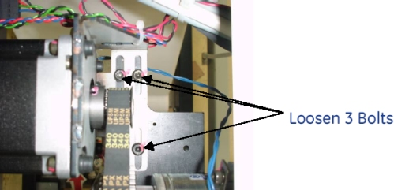
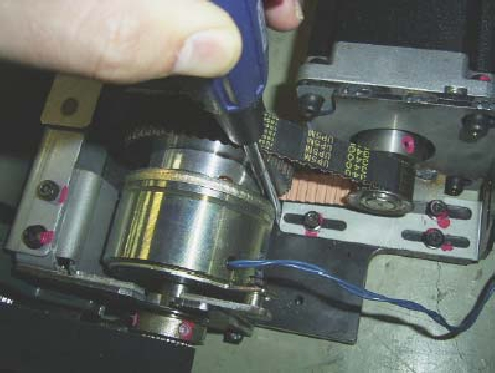
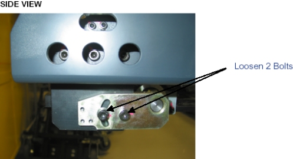
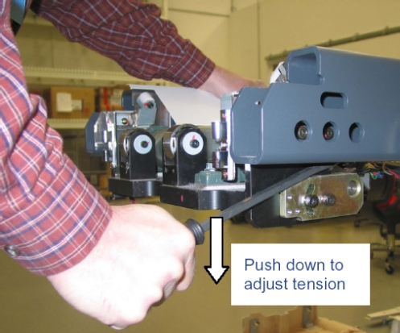

Operating Documentation
Direction 5193574-800, Rev# 22
LightSpeed 7.X Service Methods
Module Version 4.0, Version Date 2/10/15
Operating Documentation |
| Required Persons | Preliminary Reqs | Procedure | Finalization |
|---|---|---|---|
| 1 |
| Item | Qty | Effectivity | Part# | Manufacturer | |
|---|---|---|---|---|---|
| Gates Sonic Tension Meter (507C) or Equivalent | 1 | - | - | - | |
| Condition | Reference | Effectivity |
|---|
Turn the Tension meter on.
For the Gates Sonic Tension Meter model 507 C, press the Measure button and then press the Hz button. The green LED will be flashing. For an equivalent meter, make sure it is setup to measure frequency.
Raise the table to maximum height.
Move the cradle and IMS to out limit position.
Remove power from the table by turning off 120VAC, Axial Drive and HVDC switches on Service Switch Panel.
Remove the following Table component and covers:
Cradle
Top Cover (Right/Left)
Tray-F
Front Top Cover
Front Left Rail Cover
Illustration 1: Table Covers

| NOTE: | Cradle Drive Belts will be exposed. See picture below. |
Illustration 2: Cradle Drive Belts

Hold the tension meter sensor on the middle of the upper side of belt, and lightly strum the top of the cradle motor belt in the middle of the belt span to make it vibrate. This is the narrower of the two cradle belts. Measure the frequency and procedure.
| NOTE: | The closer the meters sensor is to the belt without touching,
the better the reading will be. A waveform graphic will show up on the LCD screen. After the signal is processed properly, the belt frequency will appear on the screen and a successful measurement on the Gates meter will beep 3 times, and the green LED turns on steady to indicate a successful reading. Adjust Belt Tension in small increments. If the frequency is high, loosen the belt. If the frequency is low, tighten the belt. |
Compare measurement value to the cradle motor belt frequency spec of (Between 311 and 355 HZ - optimal range).
If frequency is less than 280HZ, proceed to the following sub-steps:
Loosen 3 bolts shown below.
Illustration 3: Cradle Motor Belt Adjustment Bolts

Adjust belt using flat head screwdriver to slide the motor bracket and then tighten the three bolts securely while keeping tension on the belt.
Illustration 4: Cradle Motor Belt Adjustment

Continue to adjust belt and measure frequency until it is within spec.
Hold the tension meter sensor on the middle of the upper side of belt, and lightly strum the top of the cradle drive belt in the middle of the belt span to make it vibrate. This is the wider of the two cradle belts. Measure the frequency and procedure.
| NOTE: | The closer the meters sensor is to the belt without touching,
the better the reading will be. A waveform graphic will show up on the LCD screen. After the signal is processed properly, the belt frequency will appear on the screen and a successful measurement on the Gates meter will beep 3 times, and the green LED turns on steady to indicate a successful reading. Adjust Belt Tension in small increments. If the frequency is high, loosen the belt. If the frequency is low, tighten the belt. |
Compare measurement value to the cradle drive belt frequency spec of (Between 222 and 246 HZ - optimal range).
If frequency is within spec, reassemble all the covers and verify that all table functions are operating normally. If frequency is less than 185HZ, proceed to the following sub-steps:
Loosen 2 bolts on the cradle drive belt tensioner to remove tension on the belt. The bolts are located on the left side of the IMS.
Illustration 5: Cradle Drive Belt Adjustment Bolts

Adjust belt using flat head screwdriver to set the tension on the cradle drive belt. Tighten the two bolts securely while keeping force applied to the screwdriver.
Illustration 6: Cradle Drive Belt Adjustment

Continue to adjust belt and measure frequency until it is within spec.
Reassemble all covers.
Power up the table from the service Switch Panel in gantry.
Move the cradle and IMS in and out completely 10 cycles, and verify that table movement is operating normally.